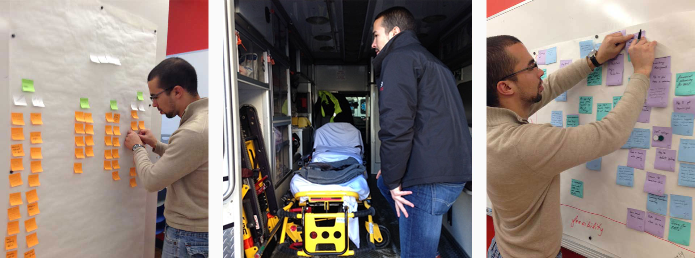

Medium-Fidelity Prototype
We created a medium-fidelity prototype using Illustrator and Invision. We conducted think-alouds to test the prototype.

An iPhone app that helps EMTs check the status of their ambulance and send medicine-usage reports after a run.
We conducted an extensive literature review and competitive analysis. We also interviewed two EMTs and observed their routines on an ambulance. We syntehsized the research using an affinity diagram andrefined our ideas using a feasibility assessment.
1 EMTs use the eye-test to see if their ambulance is running low on items.
2 While caring for a patient, EMTs have to write down what medicines they administer to them.
With the key insights in mind, we wanted to create an app that addressed the breakdowns in an EMTs workflow. We created 4 paper prototypes and the app's flow diagram on butcher paper with post-its. Then, we tested the prototypes and app flow to validate the app's intended features and flow.
We created a medium-fidelity prototype using Illustrator and Invision. We conducted think-alouds to test the prototype.
We created a medium-fidelity prototype using Illustrator and Invision. We conducted think-alouds to test the prototype.
Indicates that there is at least one item that is completely empty.
Indicates that there is at least one item that is running low but no items completely empty.
Indicates that all of the items are full.
EMTs can slide between the icons to see the inventory that is completely empty, running low, or completely full (if there are no items for a particular category, that list is empty).
The "Last Run" section of this app was a solution to a breakdown we recognized early-on in an EMTs workflow. When EMTs pick up patients, they have to document by hand the medicines that were used by the patient during the ride and report them for billing purposes later.
Instead of this onerous system, we devised an automatic, scale-based system that is able to tell the amount of medicine that was utilized on the last run, as well as the distance the ambulance travelled, the duration of the trip, and the inventory status of the medicines that were used on the run. Most importantly, the app allows the user to quickly send the digital medicine-usage report to the hospital and insurance company.
We found that EMTs want to go back and look at their previous runs that day. Specifically, we found that EMTs don't need to look at runs from prior days, only runs in their last shift. For that reason, we provided a "Last Shift" view, that allows EMTs to see the runs they took on their last shift. If they click on a particular run, it takes them to the "Run Details" screen (similar to the "EMT's Last Run" screen).